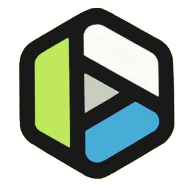

홈 > 브랜드 매거진 > Expo '75
Expo '75
엑스포 '75(Expo '75)는 1975년 오키나와에서 열린 국제해양박람회로, 심볼마크는 그래픽 디자이너 나가이 카즈마사가 디자인했다.
산업 분야 미디어·엔터테인먼트 · 공개 등급 편집 검수 · 브랜드 평가 4 ★
Ex
Expo '75
한눈에 보는 브랜드
엑스포 '75(Expo '75)는 1972년 오키나와의 일본 본토 복귀를 기념해 1975년 오키나와에서 열린 국제해양박람회로, '바다 — 그 바람직한 미래'를 주제로 삼았다. 11명의 정상급 디자이너가 참여한 지명 컴페티션을 거쳐, 심볼마크는 그래픽 디자이너 나가이 카즈마사(永井一正)의 안이 1972년 선정·발표됐다.
마스코트 마크 '오키짱'은 도쿄 1964 올림픽 엠블럼으로 유명한 가메쿠라 유사쿠가 맡아, 두 거장이 역할을 나눠 참여했다.
브랜드 아이덴티티
심볼마크는 호쿠사이풍의 일본적 파도를 세 개 연속으로 표현한 형태다. 흰 파도선을 경계로 위는 하늘의 청색, 아래는 바다의 짙은 남색을 두어 넓은 바다와 하늘을 표현했다.
나가이는 '둘로는 넓은 바다를 표현하기에 부족하고 넷으로는 약해진다, 연속을 상상하게 하는 셋이 꼭 알맞다'고 설명했다. 박람회 포스터는 린파 양식의 전통 파도와 해양 사진을 결합해 일본 특유의 바다를 세계에 알리고 오키나와 부흥의 기반이 되도록 제작됐다.
제품과 서비스
대표 제품과 서비스 정보는 편집 검수 후 공개됩니다.
사람들
타임라인
BI/CI 변천사
확인된 BI/CI 이미지가 아직 없습니다.
함께 읽을 브랜드
AZ
AZ
미디어·엔터테인먼트 · 디렉토리AZAZ는 프랑스의 미디어·엔터테인먼트 브랜드로, 콘텐츠 포맷, 팬덤, 채널 운영, 지식재산권 확장이 함께 작동하는 영역입니다.
 미디어·엔터테인먼트 · 편집 검수Expo '70
미디어·엔터테인먼트 · 편집 검수Expo '70Expo '70는 1965년에 기록된 World Expos 계열의 브랜드 아이덴티티 사례입니다. Takeshi Otaka, Yusaku Kamekura가 아이덴티티...

미디어·엔터테인먼트 · 편집 검수Expo '74Expo '74는 1972년에 기록된 World Expos 계열의 브랜드 아이덴티티 사례입니다. Lloyd L. Carson가 아이덴티티 작업의 디자이너로 기록되어...
Ex
Expo '90
미디어·엔터테인먼트 · 편집 검수Expo '90Expo '90는 1987년에 기록된 World Expos 계열의 브랜드 아이덴티티 사례입니다. Mitsuo Katsui가 아이덴티티 작업의 디자이너로 기록되어 있습...
Ex
Expo 85
미디어·엔터테인먼트 · 편집 검수Expo 85Expo 85는 1981년에 기록된 World Expos 계열의 브랜드 아이덴티티 사례입니다. Ikko Tanaka가 아이덴티티 작업의 디자이너로 기록되어 있습니다....
Po
Portopia '81
미디어·엔터테인먼트 · 편집 검수Portopia '81Portopia '81는 1978년에 기록된 World Expos 계열의 브랜드 아이덴티티 사례입니다. Fumio Koyoda가 아이덴티티 작업의 디자이너로 기록되어...
 미디어·엔터테인먼트 · 디렉토리CTI Records
미디어·엔터테인먼트 · 디렉토리CTI RecordsCTI 레코드(CTI Records)는 1967년 프로듀서 크리드 테일러가 미국 뉴욕에서 세운 재즈 레이블이다. 재즈에 펑크·팝 감각을 더한 크로스오버 사운드로 19...
MI
MIT Museum
미디어·엔터테인먼트 · 편집 검수MIT MuseumMIT Museum는 2023년에 기록된 From the USA 계열의 브랜드 아이덴티티 사례입니다. Pentagram가 아이덴티티 작업의 디자이너로 기록되어 있습니...